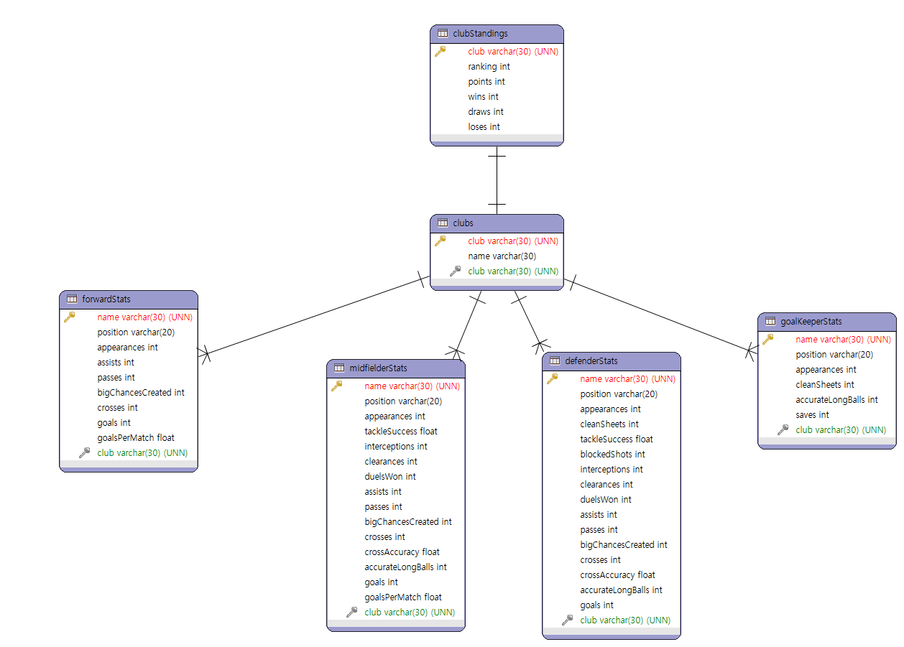

English Premier League
Stats vs Real
sql file

개요
스포츠에서 스탯은 얼마나 중요할까요? 어떤 스포츠는 스탯이 전부이고 어떤 스포츠는 비교적 스탯의 의미가 적다고 생각합니다. 그렇다면 그 차이의 기준은 뭐가 될까요? 개인전 아니면 단체전의 차이일까요? 저는 스포츠 중에서 보편적인 축에 속해 있는 “축구”에서 답을 찾아봤습니다. 데이터를 추리기 위해서 저는 세계에서 가장 뛰어난 축구 선수들이 다수 포진된 잉글랜드 프리미어리그를 선택했습니다. 시즌 중에서 가장 최근에 끝난 2020/2021 시즌의 데이터를 가져왔습니다. 선수들의 세부 개인 스탯, 클럽 정보, 및 클럽 순위 데이터를 이용해서 리그 순위와 선수 개인 스탯의 관계성을 분석해 보고 Tableau를 통해서 시각화했습니다.
데이터 전처리
데이터는 Kaggle에서 3개의 파일을 가져왔습니다.


3개의 테이블에서 필요 없는 칼럼을 지우고 중복되는 칼럼들도 정리했습니다. 그리고 선수들을 포지션 별로 분석하기 위해서 선수 테이블을 4개로 나눴습니다. 공격수, 미드필더, 수비수, 골키퍼 스탯을 선수마다 랭킹을 매겼습니다.
Rank Equation : RANK_DENSE(RANK_DENSE(SUM(['Field1'])) + RANK_DENSE(SUM(['Field2']))...)
데이터 구조
클럽별로 포지션의 스탯을 랭킹 표로 만들기 위해 테이블들의 조인한 구조입니다.
분석
잉글랜드 프리미어리그 2020/2021 시즌의 공격수들의 스탯을 그래프로 나타내 보았습니다. 보이는바와 같이 1,2위는 해리 케인과 손흥민입니다. 하지만 둘이 속해 있는 토트넘 핫스퍼 클럽은 클럽 순위에서 결국 7위를 했습니다. 포워드 스탯만 봐도 선수 개인 스탯은 팀 순위와 직접적인 관계가 약하다는 것을 엿볼 수 있습니다.
본 프로젝트의 목적지인 스탯 기반 클럽 순위 vs 실제 클럽 순위 차트입니다. 겉보기에는 스탯과 실제 순위는 관계가 아예 없어 보이지만 자세히 보면 실제 상위권이랑 하위권 클럽들이 스탯 랭킹에 맞게 포진되어 있는게 보입니다. 아주 약한 관계가 있긴 하지만 몇몇 클럽들은 아예 연관이 없는걸 볼 수 있습니다. 결국 선수 개인 스탯 기반으로 클럽의 실제 순위를 예측하기엔 관계가 너무 약합니다.
예를 들어서, 골키퍼의 스탯이 낮은 이유가 수비수들이 공이 골키퍼한테 가기전에 잘 처리해서 골키퍼가 아예 스탯을 쌓을 기회가 안와서 그런거일수도 있습니다. 축구는 골을 더 많이 넣은 팀이 승리를 하게 되지만 실점하지않는것도 중요하고 플레이 과정에서 볼 수 있는 승리와 연관된 요인들이 무수히 많습니다.